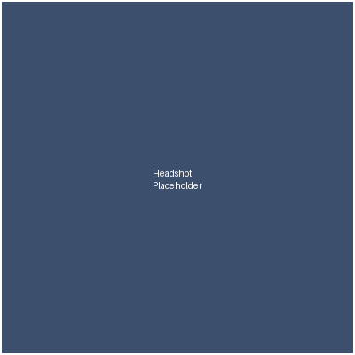

About Me

I'm a CS undergrad and most of my time goes toward front-end work and human-computer interaction. Accessibility is something I actually care about, not just something I mention because it sounds good. I'm also genuinely interested in progressive enhancement: the idea that a page should work fine before any CSS or JavaScript even loads, and everything else is just extra on top.
Outside of class I tend to over-engineer small tools for myself, things like habit trackers, recipe organizers, and a campus event finder. That's basically where most of the projects on this site came from.
Skills
- HTML5 & semantic markup
- CSS3 (Grid/Flexbox)
- JavaScript / TypeScript
- Python
How I'd rate myself
HTML/CSS
JavaScript
Python
Resume
Beyond the Portfolio
Here's an embedded preview of my first project write-up, mostly just to show the iframe actually works: